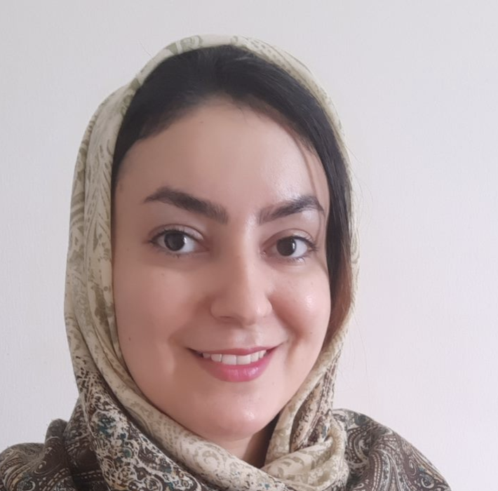
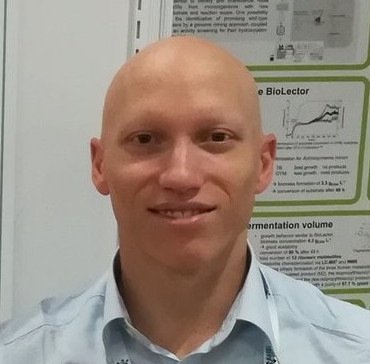

People
Yu Amanda Guo (PostDoc)
PhD in Bioinformatics and Genetics
Cornell University, USA.
Mei Mei Chang (Bioinformatics Scientist)
Bachelor in Biostatistics
National University of Singapore.
 Neha Rohatgi
Neha Rohatgi (PostDoc)
PhD in systems biology
University of Iceland.
Guanhua Peter Zhu (PostDoc)
PhD in computational biology
Nanyang Technological University, Singapore.
Egor Revkov (Graduate student)
Bachelor in Applied Mathematics and Physics
Moscow Institute of Physics and Technology (MIPT).
 Probhonjon Baruah
Probhonjon Baruah (Bioinformatics Scientist)
Bachelor in Technology
Indian Institute of Technology Guwahati.
 Kiran Krishnamachari
Kiran Krishnamachari (Graduate student)
Bachelor in Engineering
National University of Singapore.
 Weitai Huang
Weitai Huang (Postdoc)
PhD in Bioinformatics and Biochemistry
National University of Singapore.
 Sinem Kadioglu
Sinem Kadioglu (Graduate student)
Bachelor in Molecular Biology and Genetics
Istanbul Kultur University, Turkey.

Maryam Abedi (Graduate student)
Master in Human Genetics
Isfahan University of Medical Sciences, Iran.
Ngak Leng Sim (Bioinformatics Scientist)
Bachelor in Computer Science
University of British Columbia, Vancouver, Canada.
Hanaé Carrié (Graduate student)
Master in Biomedical Sciences
Paris-Saclay University — CentraleSupélec, France.
Jacob Alvarez (Graduate student)
Bachelor in Biomedical Sciences
National University of Singapore.
 Jia Chi Yeo
Jia Chi Yeo (Postdoc)
PhD in Biological Sciences
Nanyang Technological University, Singapore.
 Mengyuan Pang
Mengyuan Pang (Bioinformatics Scientist)
Master in Statistics
National University of Singapore.
Victor Getty (Bioinformatics Scientist)
Bachelor in Physics and Mathematics
Nanyang Technological University, Singapore.

Simone Rizzetto (Postdoc)
PhD in Medical Sciences
University of New South Wales, Australia.
Anders Jacobsen Skanderup (Principal Investigator)
Adj. Asst. Professor, School of Computing, NUS;
Adj. Senior Scientist, National Cancer Center Singapore.
 Alumni
Postdocs:
Alumni
Postdocs: Khi Pin Chua, Pacific Biosciences; Chee Wee Ong, National Cancer Center Singapore; Umesh Ghoshdastider, ETH Zurich; Irfahan Kassam, NUS; Chee Wee Ong, National Cancer Center Singapore;
PhDs: Weitai Huang, Genome Institute of Singapore; Marjan Naeini, QIMR Brisbane;
Staff scientists: Kiran Krishnamachari, A*STAR; Jacob Alvarez, Genome Institute of Singapore;
Interns: Jazzlyn Tan, Imperial College of London; Yuhan Ma, NTU; Yutong Cai, University of Cambridge; Julie Sulacroup, University of Bordeaux; Kayla Lee, University of British Columbia; Ahmed Abdelmoneim, University of British Columbia; Dylan Lu, University of British Columbia; Alexander Swift-Scott, University of British Columbia; Hamzeh Mesrian, University of Isfahan; Egor Revkov, Moscow Institute of Physics and Technology; Anuar Yeraliyev, University of British Columbia; Kayla Lee, University of British Columbia; Satwik Bhattamishra, Birla ITS; Tanmay Kulshrestha, Birla ITS; Karthik MuthuKumar, Northeastern University, Boston; Tin Nguyen, University of Science, HCM City; Sundar Solai, Harvard University; Karthik Muthukumar; Probhonjon Baruah, Indian Institute of Technology, Guwahati;